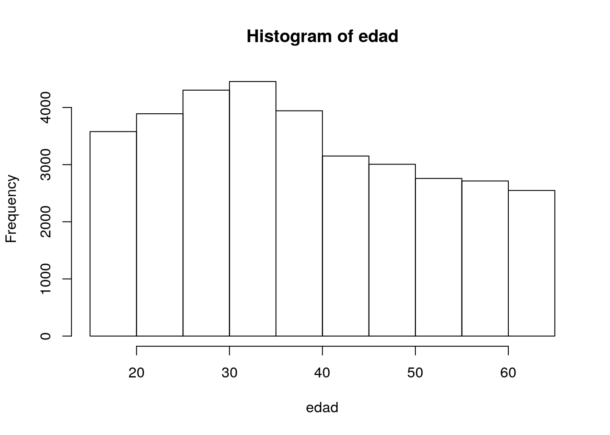

Capítulo 9 Gráficos de frecuencias
9.1 Histogramas
El histograma es una buena manera de observar la distribución de los datos en variables contínuas. Realicemos algunos gráficos para las variables trabajadas en el Capítulo 8. Veamos como de distribuye la edad de la muestra. Para realizar un histograma, podemos utilizar la función hist
## Seleccionamos la edad y la guardamos en una nueva variable
edad <- enprecosp$BHCH05
## Realizamos un histograma.
hist(edad)
También podemos representar las frecuencias relativas o los porcentajes.
## Realizamos un histograma con las frecuencias relativas
library(lattice)
histogram(edad,
breaks = 10,
ylab = "Porcentaje del Total")## Cambiamos el número de barras. Agregamos color
hist(as.numeric(edad),
col = "seagreen")## Estilamos el gráfico
hist(as.numeric(edad),
axes = FALSE,
main = "Histograma para edad",
xlab = "Edad",
ylab = "Frecuencia",
# col = "steelblue",
xlim = c(10,70),
ylim = c(0, 5000),
col = rainbow(5))
axis(1, pos = 0)
axis(2, pos = 10)9.2 Gráfico de barras
El gráfico de barras nos permite visualizar las frecuencias en variables cualitativas. Para realizar un gráfico de barras podemo utilizar la función barplot
## Seleccionamos BISG02 y la guardamos en una nueva variable
accidente <- enprecosp$BISG02
## Convertimos a factor y etiquetamos los códigos de valores
accidente <- factor(accidente,
labels = c("Sí", "No", "Ns/Nc"))
## Construimos las frecuencias para la variable accidente
f <- table(accidente)
frel <- prop.table(f)
## Juntamos todo y armamos una tabla de distribución de freucuencias.
dfreq <- cbind(f, frel)
barplot(dfreq[,1],
col = "steelblue")
9.3 Gráfico de tortas
Los gráficos de tortas también nos permiten graficar frecuencias. Los gráficos de torta están actualmente desaconsejados. Se aconseja en su lugar el uso de gráfico de barras. Los gráficos de barras permiten visualizar más facilemente las diferencias de proporciones que los gráficos de barras, particularmente cuando representamos más de dos proporciones. Para ver una revisión acerca de la discusión de gráficos de barras y de torta vea Spence (2005). Para realizar un gráfico de tortas, podemos utilizar la función pie
## Seleccionamos BISG02 y la guardamos en una nueva variable
accidente <- enprecosp$BISG02
## Convertimos a factor y etiquetamos los códigos de valores
accidente <- factor(accidente,
labels = c("Sí", "No", "Ns/Nc"))
## Construimos las frecuencias para la variable accidente
f <- table(accidente)
frel <- prop.table(f)
pie(frel)Estilamos el gráfico. Agregamos los porcentajes.
## Cargamos librería para formatear los porcentajes
library(formattable)
## Guardamos la tabla con porcentajes en una nueva variables
porcentaje <- percent(frel, digits = 2, dec = ",")
## Construimos las etiquetas
etiq <- paste(names(porcentaje),"; " , round(porcentaje, 4), sep = "")
pie(porcentaje,
labels = etiq,
radius = 1,
col = c("tomato", "whitesmoke", "violetred")
)
9.4 Ojiva de Galton
La ojiva de Galton nos permite graficar las frecuencias relativas acumuladas y buscar percentiles y cuantiles empíricos. Veamos como se distribuye la edad de inicio de consumo de marihuana en la muestra:
## Seleccionamos la edad y la guardamos en una nueva variable
## Quito los valores 99, que corresponden a NS/NC
edad <- enprecosp$BIMA03[enprecosp$BIMA03 != 99]
f <- table(edad)
frel <- prop.table(f)
frelcum <- cumsum(frel)
plot(names(frelcum), frelcum,
type = "s",
ylab = "F'",
xlab = "Edad")## Realizamos un gráfico similar, pero utilizando la función
## distribución acumulada empírica
plot(ecdf(edad),
main = "Ojiva de Galton",
xlab = "Edad")References
Spence, Ian. 2005. «No humble pie: The origins and usage of a statistical chart». Journal of Educational and Behavioral Statistics 30 (4). Sage Publications Sage CA: Los Angeles, CA: 353-68.